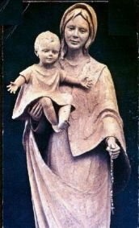
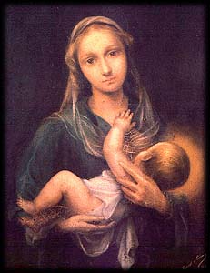
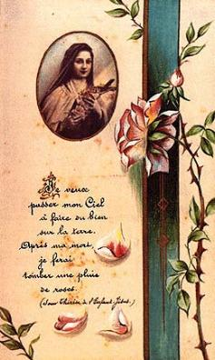

Com a intenção de evidenciar
nestas páginas a efetiva e benéfica intercessão de Santa Teresinha junto a DEUS,
em favor daqueles que suplicam o seu inefável auxílio, apresentamos a seguir
dois fatos, verificados e comprovados, ocorridos com membros do Apostolado
dos Sagrados Corações.
Com a intenção de evidenciar
nestas páginas a efetiva e benéfica intercessão de Santa Teresinha junto a DEUS,
em favor daqueles que suplicam o seu inefável auxílio, apresentamos a seguir
dois fatos, verificados e comprovados, ocorridos com membros do Apostolado
dos Sagrados Corações.
"FAZENDA DIFÍCIL"
"Ele tinha uma profissão liberal, mas no
momento não
exercia, porque o mercado de trabalho não estava bom. Mas necessitando
trabalhar para viver, cheio de ideais, comprou uma pequena fazenda com 47 alqueires de
terra, objetivando fazê-la produzir, para lhe proporcionar o próprio sustento.
Entretanto, embora trabalhasse incansavelmente durante dois anos e tendo feito
vários investimentos em melhorias, construções novas, casas para empregados,
rede de energia elétrica, equipamento para irrigação, equipamento para aplicação
de agro-tóxicos, tratores, tecnologia avançada no preparo e plantio de mudas,
etc., não conseguiu êxito, porque a despesa era muito grande e a comercialização
difícil. A cotação dos produtos agrícolas estavam nas mãos de cartéis que
estabeleciam os preços conforme os seus interesses.
Por essa razão,
triste e aborrecido, decidiu esquecer o sonho da propriedade agrícola e
vende-la. Fotografou-a em diversos ângulos, preparou um pequeno álbum
com as informações e deixou numa Imobiliária.
Todavia, o
tempo passava, as despesas continuavam e os clientes em potencial não
apareciam.
No
início do Ano de 1979, o quadro financeiro familiar já andava desequilibrado
perigosamente, porque a expectativa de negócio era a mais desanimadora possível
e a reserva financeira atingiu a marca vermelha, indicando que estava acabando e
no momento, ele não possuía outra renda.
No Mês de Março
de 1979 as perspectivas continuaram sem qualquer novidade promissora... A situação
estava tornando-se dramática, principalmente considerando que a família era
grande, com esposa e cinco filhos que frequentavam colégios, uma empregada na
residência e cinco empregados na fazenda!
Família
religiosa e praticante, participava das Missas todos os domingos e nos dias
santificados prescritos pela Igreja, da mesma forma que procurava participar das
festividades em honra dos Santos e tinha o hábito de rezar em casa.
Dessa forma,
possuindo uma fé vigorosa na misericórdia de DEUS, o casal decidiu rezar uma novena,
suplicando a intercessão de um Santo de sua devoção junto ao SENHOR, a fim de
alcançar a graça almejada, ou seja, vender a fazenda.
Os dias
passavam e a situação não se modificava, a renda familiar estava tornando-se caótica.
Foi quando souberam, através
de amigos, da existência da
"poderosa Novena das Rosas de Santa Teresinha do Menino Jesus e da Sagrada
Face", que além
de interceder junto a DEUS com eficácia, a "Santinha" enviava uma ou mais rosas aos seus
devotos, anunciando que as orações foram recebidas pelo CRIADOR e que em breve
a súplica seria atendida.
Cheios de esperanças
e com fé renovada, em princípio de Maio de 1979 o casal decidiu rezar a
Novena das Rosas. No mesmo dia, foram convidados por casais amigos a
participarem de um Encontro de Casais com CRISTO. Aceitaram.
A Novena estava
no 5º Dia, quando em companhia dos demais casais reunidos num amplo refeitório,
participavam do primeiro almoço do Encontro. E como ocorria em todos os
Encontros de Casais, aconteceram as habituais brincadeiras: o pessoal da
Cozinha, em ruidoso desfile com tambores, flautas, cornetas, cantando e dizendo
versos, anunciavam greve de fome; os cozinheiros e auxiliares entraram no refeitório
circulando entre as mesas, ao mesmo tempo em que alguns ameaçavam jogar baldes
com água encima dos casais, que sorrindo abaixavam-se com medo da "chuva"
que poderia vir, até que afoitamente, um deles com um caldeirão cheio, na ponta dos
pés e sem que ninguém percebesse, parou atrás do casal da fazenda e derramou tudo
sobre os dois. Gargalhadas, risos, gritos de participação e de júbilo
se ouviram de todos os lados e se misturaram formando uma sonora algazarra. O
caldeirão estava cheio com lindas e perfumadas pétalas de rosas de várias tonalidades...
Ao invés de uma única flor, Santa Teresinha enviou ao casal, um caldeirão com centenas
de pétalas de muitas rosas! Enquanto todos sorriam e aplaudiam a maravilhosa brincadeira,
o casal sorridente, acolhia a brincadeira repleto de felicidade, derramando caudalosas
lágrimas de amor e de gratidão, porque entendeu através daquela brincadeira de
seus companheiros de Encontro, o auspicioso aviso que Santa Teresinha lhes enviava.
Na semana
seguinte a fazenda foi vendida!".

"UMA POUPANÇA DIFERENTE"
"Ele era engenheiro especialista na construção e venda de casas
residenciais. Comprava um lote, construía uma casa com seus
recursos e depois
que recebia o Habite-se da Prefeitura Municipal, vendia o imóvel.
Todavia, o ano
de l987 apresentou-se difícil, oferecendo raras oportunidades de negócios.
Durante todo o ano não conseguiu construir uma única casa, nem por empreitada
e nem com os seus próprios recursos, porque os clientes desapareceram. Ele
atravessava um período árido e de grande dificuldade financeira, porque possuindo
numerosa família, a despesa acontecia e não havia faturamento para cobrir as
despesas e manter uma reserva mínima. E assim, como a despesa era inevitável,
chegou a consumir quase a metade do pouco que possuía.
Em Janeiro de
1988, a situação imobiliária não se modificou.
A família era
religiosa e se esforçava em cumprir dignamente os deveres e obrigações
de cristãos. Todavia, aquela terrível situação, mantinha o casal com o coração
transpassado de angústias e aflições.
Mesmo assim, possuindo uma fé verdadeira, apesar da dificuldade que atravessavam,
não queriam rezar novenas suplicando a intercessão de um Santo de sua devoção
junto a DEUS, porque como diziam, "não queriam incomodar".
O SENHOR tinha coisas mais importantes para resolver neste mundo violento.
Deixavam os problemas nas mãos de DEUS. Quando o SENHOR decidisse dar-lhes
alguma coisa, eles aceitariam com prazer.

Verdadeiramente,
este procedimento é também correto. Entretanto, não é errado pedir e
suplicar a misericórdia Divina, porque na Sagrada Escritura está a palavra de
DEUS que nos ensina:
"Pedi e vos será dado;"(Mt 7,7).
De Fevereiro a
Maio de 1988 o panorama financeiro não se alterou, ao contrário, completava desse
modo, um ano e meio sem trabalho, sem construir, sem faturar nenhuma obra, gastando
a sua reserva financeira porque não possuía nenhuma outra renda que lhe desse
recurso para viver. Assim, a economia da família mergulhou num abismo
desesperador.
No lar do casal
viviam uma filha separada e uma neta, duas filhas solteiras que estudavam, uma
empregada e um rapaz que ajudava na manutenção do imóvel e fazia serviços
externos.
Como o dinheiro
estava praticamente acabando, em fins de Maio decidiram colocar a casa em que
moravam a venda. Era uma belíssima "mansão",
bem construída e confortavelmente ampla, que na palavra dele, era como se fosse
a poupança da família, um precioso tesouro construído com trabalho e muito amor,
que por isso mesmo, era
"uma poupança especial e diferente".
Em 31 de Maio
de 1988 foi um dia marcante na vida do casal, porque conversando, fizeram
uma revisão dos últimos anos de vida matrimonial, do trabalho de ambos, das
lutas, das dificuldades que enfrentaram e das vitórias alcançadas. E a
noite, como tinham o hábito de rezar o Terço de NOSSA SENHORA, assim que
regressaram da Igreja onde participaram da Santa Missa, decidiram também
mudar o procedimento em relação às novenas e assim, resolveram rezar
a
"poderosa Novena das Rosas de Santa Teresinha".
Embora os dias
decorressem normalmente, nasceu no coração do casal uma grande esperança,
a medida que avançavam os dias da novena, até que chegou aquele
inesquecível 6 de Junho.
Como
habitualmente ocorria, o rapaz que auxiliava na residência chegou ao trabalho
vindo de sua casa e logo procurou pela esposa do engenheiro. Disse:
- "Mamãe sonhou a noite toda com a senhora e seu marido ... Como testemunho
de amizade, mandou-lhe esta flor!"
E entregou-lhe um lindo botão de rosa vermelha, que começava abrir as suas pétalas.
Sorrindo
e agradecida, com as lágrimas inundando os seus olhos, a esposa
pressurosamente correu para mostrar ao marido o presente que acabava de
ganhar... Foram muitos risos, lágrimas de emoção, orações, palavras de
agradecimento e de louvor a DEUS, que transbordaram torrencialmente
daqueles dois corações amorosos e fieis, que souberam perseverar na
fé, apesar de todos os problemas e dificuldades que enfrentaram.
Sorridentes e jubilosos agradeciam a Santa Teresinha a maravilhosa
atenção pelo envio da rosa e diante da imagem de JESUS,
profundamente comovidos e ajoelhados, rezaram um terço
de gratidão.
A casa foi
vendida dias após e toda família reunida, em manifestação de amor e agradecimento,
exaltaram a grandeza da Bondade do CRIADOR."
Próxima Página
Página Anterior
Retorna ao Índice